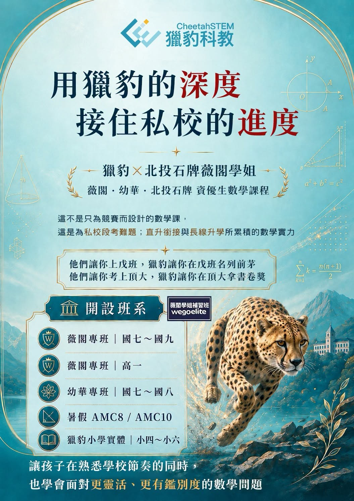

薇閣・幼華・北投石牌資優生數學課程～用獵豹的深度，接住私校的進度
在私校學習數學，家長最常關心的第一件事，往往是：課程進度能不能跟學校接得上？
這當然重要。
薇閣、幼華等私校，數學進度快、章節順序不同、段考節奏緊，孩子如果沒有熟悉學校安排，很容易在平時小考、段考與直升銜接中感到吃力。
在獵豹北投石牌實體，我們想做的，不只是「跟上進度」。
因為真正能讓孩子在私校競爭中佔有優勢的，往往不是多往前學了幾章，而是孩子是否真正理解觀念、是否能分析題目、是否能面對更靈活、更有鑑別度的問題。
這也是我們與北投石牌 薇閣學姐 合作開設課程的核心想法：
【用獵豹的深度，接住私校的進度。】
這不是只為競賽而設計的數學課，而是為私校段考、直升銜接與長線升學所累積的數學實力。
我們希望孩子在熟悉學校節奏的同時，也能透過獵豹一貫重視的加深加廣、分析推理與專家模式訓練，慢慢建立真正能應付難題的能力。
獵豹 × 北投石牌 薇閣學姐補習 2026/07開設班系包含：
薇閣專班｜國七～國九
薇閣專班｜高一
幼華專班｜國七～國八
暑假 AMC8 / AMC10
獵豹小學實體｜小四～小六
給正在薇閣、幼華就讀，或北投石牌地區希望數學走得更深、更遠的孩子。
進度讓孩子接上學校，
深度讓孩子走向頂尖升學。
他們讓你上戊班 獵豹讓你在戊班名列前茅
他們讓你考上頂大 獵豹讓你在頂大拿書卷獎
